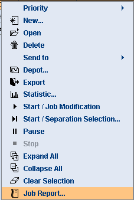
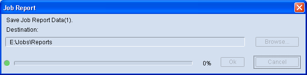
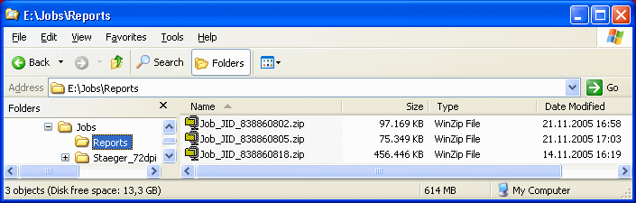

Если у вас неисправная задание, вы можете использовать «Отчет о работе» в контекстно-чувствительном меню, чтобы сохранить данные, необходимые для анализа ошибок, в ZIP-архиве. Служба Гейдельберга может провести анализ ошибок на этих данных. Сохраняются следующие данные:
Для составления отчета о работе:
1. В списке заданий отметьте одну или несколько заданий, для которых вы хотите создать отчет о работе. Для каждой выбранной работы будет создан архив ZIP.
2. Выберите «Отчет о работе» в контекстно-чувствительном меню.

3. Открывается диалог «Отчет о работе». Нажмите «Просмотр», чтобы открыть диалог просмотра, где вы можете искать папку или создать новую.
4. Подтвердите диалог с «ОК». Затем начинается составление отчета о работе. Прогресс-бар отображается одновременно. Прогресс бар показывает вам в процентах, когда одиночные работы завершены. Например, если выбрано три задания, 33% отображаются при завершении первой работы, 66% при завершении второй работы и, наконец, 100%. Если вы выбрали только одну работу, планка прогресса увеличивается до 100% при создании отчета о работе.

Диалог может показывать это состояние довольно долго, в зависимости от объема данных в задания и количества отобранных заданий. Возможно, вам придется подождать некоторое время, пока не будут созданы данные отчета.
5. Вы можете проверить, что ваши данные о работе были созданы в Windows Explorer:

Copyright © 2013 Heidelberger Druckmaschinen AG